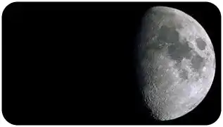

Comment vivre sur la lune ?

Vivre sur la lune est la première étape de la conquête spatiale. Grâce à sa faible gravité, et sa distance plus proche de mars, elle est le poste de lancement idéal pour une possible conquête des planètes.
3. Les ressources minérales : Des ressources comme les pierres rares sont également présents sur la lune. Rien à voir avec les pierres précieuses. Ce sont des métaux largement répandus sur terre, mais présent en plus grande quantité sur la lune. Pourtant, ce minerai représente un composant indispensable dans la fabrication des batteries et de chargeurs électriques.
2. L’eau lunaire : On trouve également de l’eau sous forme de glace. Elle serait apparue lors de sa collision avec la terre il y a 4.5 milliards d’années. Cette découverte est la plus importante de toute. Elle apporte la preuve que la vie sur la lune sera possible. En plus de pouvoir s’hydrater et respirer, elle sera utilisée comme carburant au décollage des fusées, qui fonctionnent aujourd’hui par combustion d’hydrogène et d’oxygène
L’hélium 3 : Son origine provient des rayonnements du soleil propulser par les vents solaires. Identique à l’hélium terrestre, à la seule exception près que celle-ci possède un neutron en moins. Possédant un haut niveau d’énergie, son utilisation peut être suffisante pour alimenter une centrale nucléaire. Seulement, l’énergie déployée pour l’extraire et la ramener sur terre serai 3 fois plus importante que ce qu’elle pourrait nous fournir. L’idéal est donc de l’exploiter directement sur la lune.

abonnez - vous gratuitement pour découvrir nos nouveaux articles
Pour aller plus loin :
Rejoind une communauté de passionné.
#xplore #space #decouverte #technology
Retrouve X’plore sur YouTube et découvre nos meilleurs sujets.
Réagit à toute notre actualité